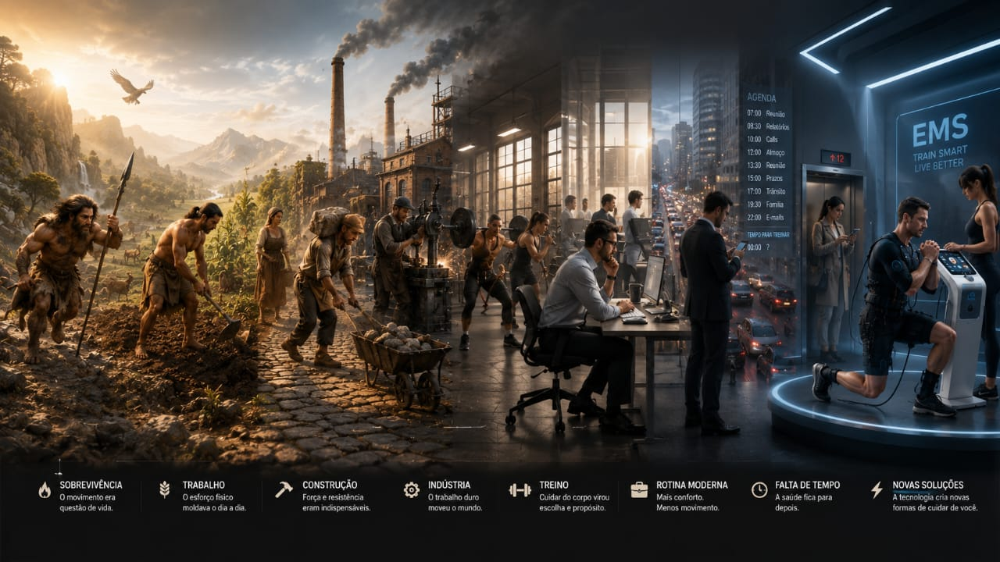

Capítulo 01
Sobrevivência
O movimento era indispensável para continuar vivo.
A evolução do movimento humano

Antes o ser humano se movimentava para sobreviver. Hoje ele precisa se movimentar para continuar vivendo bem.
Entrar no PortalDurante milhões de anos, o movimento fez parte da sobrevivência da humanidade. Caminhar, correr, caçar, plantar, construir e trabalhar eram atividades naturais da vida.
Com o passar do tempo surgiram máquinas, veículos, computadores, automação e conforto. O ser humano passou a gastar cada vez menos energia física no dia a dia.
Hoje, nosso maior desafio não é sobreviver. Nosso desafio é preservar saúde, força, mobilidade e qualidade de vida.
O movimento era indispensável para continuar vivo.
O esforço físico fazia parte da rotina diária.
O corpo humano construiu cidades, estradas e civilizações.
As máquinas começaram a substituir parte do esforço físico humano.
Pela primeira vez na história, movimentar-se tornou-se uma escolha.
Computadores, automóveis, elevadores e smartphones reduziram drasticamente nossa movimentação diária.
O maior desafio atual não é saber que precisamos nos exercitar. É conseguir encaixar isso na rotina.
Uma nova etapa da evolução do movimento humano.
O WB-EMS (Eletroestimulação Muscular de Corpo Inteiro) representa um novo capítulo dessa evolução, oferecendo uma alternativa moderna para estimular o corpo dentro da realidade da vida atual.
ENTRAR NO PORTALInformação, ciência, tecnologia e conhecimento sobre o universo do WB-EMS.
Conceitos fundamentais, funcionamento e princípios da eletroestimulação muscular de corpo inteiro.
Evidências científicas, envelhecimento saudável, mobilidade e qualidade de vida.
Performance, treinamento, condicionamento físico e resultados.
Aplicações corporais, tonificação muscular e bem-estar.
Empresas, equipamentos, tecnologias e evolução do mercado.
Publicações, pesquisas, artigos e referências técnicas.
Perguntas frequentes respondidas por especialistas.
Termos técnicos utilizados no universo do WB-EMS.
A evolução do movimento humano.